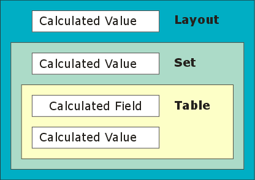
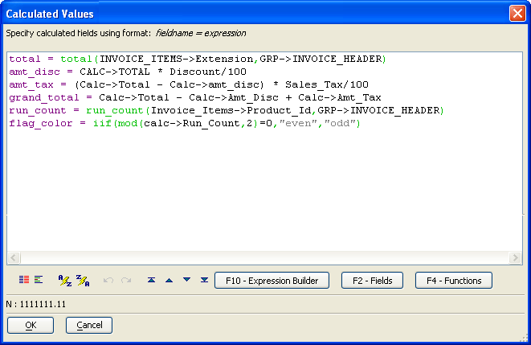
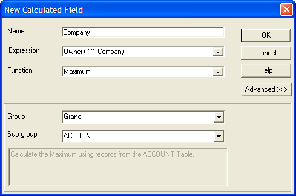

Calculated Values
Alpha Anywhere calculates a calculated value when it is based on one or more fields in a table and you change or enter a record. You may define a calculated field for a:
table
set
layout
Alpha Anywhere supports two similar capabilities:
Calculated Fields - where Alpha Anywhere calculates the value of a table field
Calculated Values - which you may place on a layout or use in computations
 Note : Alpha Anywhere
documentation and software has traditionally referred to the values that
you calculate and place on a layout as "calculated fields".
However, these values are not fields, because they are not stored in a
table record. They are temporary variables that are created and calculated
on demand.
Note : Alpha Anywhere
documentation and software has traditionally referred to the values that
you calculate and place on a layout as "calculated fields".
However, these values are not fields, because they are not stored in a
table record. They are temporary variables that are created and calculated
on demand.
If you define a calculated value for a table or set, you can use it in any layout or operation defined for that table or set. If you define a calculated value for a layout, you can use it only on the layout for which it is defined. The following illustration shows you the scope of these fields.

You can create a calculated value by clicking
 when designing a table, set, or layout. You can only
create a Calculated Field in Field Rules. In all cases you can place one of these calculated fields on
a layout.
when designing a table, set, or layout. You can only
create a Calculated Field in Field Rules. In all cases you can place one of these calculated fields on
a layout.
You may place calculated values on layouts to display the results of a calculation. For example, you might place a calculation at the bottom of a sales report to display total sales. Calculated values are also used to conserve disk-space by eliminating the storage of easily-derived information. For example, if you have a table of products in which you have a Cost field and a Quantity field, you can create a calculated value for the table that multiplies Cost and Quantity with the expression Cost * Quantity. When you create a layout or operation for the table, you can use the calculated value just as you would any other field.
Defining Calculated Values for a Set or Table
Calculated values defined for a table or set are created in the Define Calculated Fields dialog box. To open this
dialog box, choose Calculated Fields from any
Layout menu or click  when designing a layout. For example,
when designing a form, select Form > Calculated
Fields... .
when designing a layout. For example,
when designing a form, select Form > Calculated
Fields... .

To create a calculated value, enter the field's name in the
Name
column. The name can contain the characters A-Z, 0-9 and underscores ("_").
It must start with a letter, contain no spaces, and have a length of 24
characters or fewer. To define the calculated value's expression, type
the expression into the
Expression column.
You can click on the
 button to use the
Expression Builder.
button to use the
Expression Builder.
 Note : The Calculated Values dialog will show global calculated values defined at the table level. If you open this dialog
from a layout, you will be to see these calculated values, but will not be able to modify them.
Note : The Calculated Values dialog will show global calculated values defined at the table level. If you open this dialog
from a layout, you will be to see these calculated values, but will not be able to modify them.
Placing calculated values on a Layout
There are two ways to create a calculated value on a layout. The first is to define the variable in the Calculated Fields dialog box, then drag its entry from the Drag-and-Drop List to the layout.
The second, and easier, way to define a calculated value is by using
the Drag-and-Drop List. In the Drag-and-Drop
List, choose "Fields" or "Fields with Titles"
from the drop-down list. Then, click and drag the "
In the
Name text box, enter the name of the
new calculated value. In the
Expression box,
enter the expression for the calculated value. (Or click the
 button to use the
Expression Builder.)
If you want to use the field to perform a summary calculation, choose
the type of operation in the Function box. For more information on summary
calculations, see the next section for details.
button to use the
Expression Builder.)
If you want to use the field to perform a summary calculation, choose
the type of operation in the Function box. For more information on summary
calculations, see the next section for details.
You can only delete a calculated value at the level of its creation. For example, if you created a calculated value on a report layout, you must delete it from the same report layout.
To delete a calculated value associated with a table or set.
Display the Tables/Sets tab of the Control Panel.
Select the table or set that contains the calculated field and click Design > Table structure or Design > Set structure.
Click
 to display the Calculated Values
dialog box.
to display the Calculated Values
dialog box.Select and delete the line that contains the calculated value definition.
Click OK.
Save the changes to the table or set.
To delete a calculated value associated with a layout.
Open the layout (form, browse, report, letter, or label) in its editor.
Click
to display the Calculated Values
dialog box.Select and delete the line that contains the calculated value definition.
Click OK.
Save the changes to the layout.
A sort key can be a maximum of 100 characters. If you want to place
a character calculated value into a layout and then sort on it using the
 or
or  buttons, the value expression must
not return more than 100 characters of data.
buttons, the value expression must
not return more than 100 characters of data.
Defining Summary Calculations (Total, Average, Etc.)
If you are creating a calculated value to place on a form or Report, Alpha Anywhere lets you use summary functions to perform calculations using multiple records from a table or set. For example, on an invoice Form, you can create a calculated value that summarizes the price and quantity of each invoice item and displays a total. On a report, you can use a calculated value to display total sales for each group of records, and for the entire Report.
In the Function drop-down list box select the type of operation you want to perform. The operations that are available depend on the data-type of the value you are summarizing. For example, you can perform a summary total on a numeric field, but not on a character field.
If the calculated value is being placed on a report or on a form designed for a set, you can determine the records to include in the operation by setting the Group and Subgroup parameters. To access these parameters, click the Advanced>> button. Refer to the following subsections for details on setting the Group and Subgroup parameters.

Setting the Group and Subgroup for a Form Defined for a Set
If you are designing a form for a set, and the set contains one or more one-to-many links, you can specify that the operation should only use child records that are linked to the current parent record.
For example, you have a set which tracks invoices, and you want to display the total of invoice line-items for the current invoice. You can set the Group and Subgroup parameter so that only invoice items from the current record are used in the calculation. To do this you set the Group parameter to the name of the primary table and the Subgroup parameter to the name of the child table in which the line-items are stored.
Suppose instead you wanted to display the grand total of invoice items for all invoices. To do this, you set the Group parameter to Grand and the Subgroup parameter to the name of the child table in which the invoice items are stored. Grand indicates that you want to use every record from the primary table, not just the current record.
Setting the Group and Subgroup Parameters for a Report
In a Report, you set the Group and Subgroup parameters to the names of sections on the Report.
For example, you have a sales report in which you have created a grouping level called Month. The Month group groups records so that sales from a given month are kept together. Suppose also that you want to place a calculated field in the group footer to display each month's total. To do this, you set the Group parameter to the name of the grouping section ( Month ) and the Subgroup parameter to Detail, since you want to use the records in the detail section for the current month.
Suppose you wanted to display the total for the entire report next to the total for the month. To do this you would create another calculated field with the same definition, except you would set the Group parameter to Grand, since you want to see the grand total for the entire report, not just the total for the current group.
In most cases, you will not have to adjust these parameters, since Alpha Anywhere sets them for you based on the section in which you place the calculated field. For example, if you place a summary calculations in a group footer, Alpha Anywhere assumes you only want to include records from the current group. If you place the summary-calculated field in the Report Footer section, Alpha Anywhere assumes you want to include every record in the Report.
Setting the Subgroup Parameter for a Sub-Report
If you place a sub-report inside a report (the "main" Report), then the sub-report will have a detail section, and the main report will also have a detail section. When you create summary calculations, you may have to qualify which detail section you are referring to.
For example, assume that the sub-report is called Subreport 1. To refer to the detail section in this sub-report, you would need to specify Subreport 1:detail. Suppose that this sub-report is grouped on Invoice_number and you wanted to total a field called Amount_due in the Group Footer of the sub-report. To do so, you would specify this expression:
|
Total(invoice_items->amount_due, grp->invoice_number, grp->Subreport 1:detail) |
If you just specify grp->detail, Alpha Anywhere assumes you are referring to records in the main report's detail section. Note that the Invoice_number group does not need to be prefixed with Subreport 1. This is because when you insert a group in a report, or a sub-report, you can specify the name of the group, and are therefore able to specify unique group names for all of the groups in a Report and its sub-reports.
See Also
Placing a Calculated Value, Calculated Fields